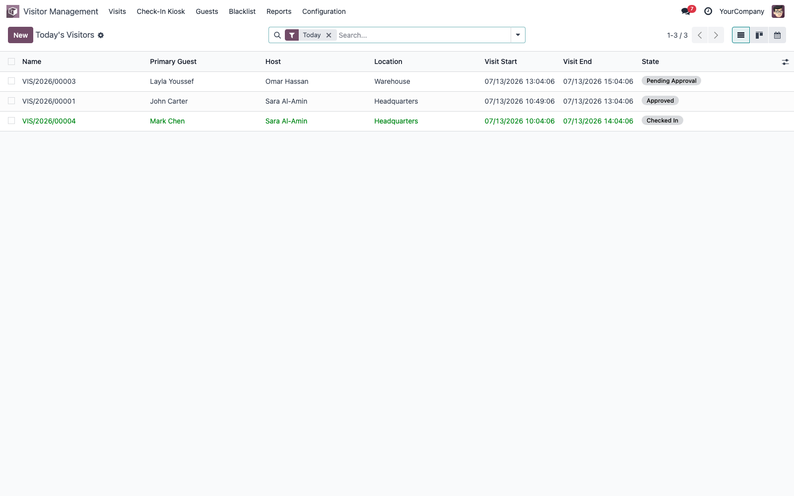
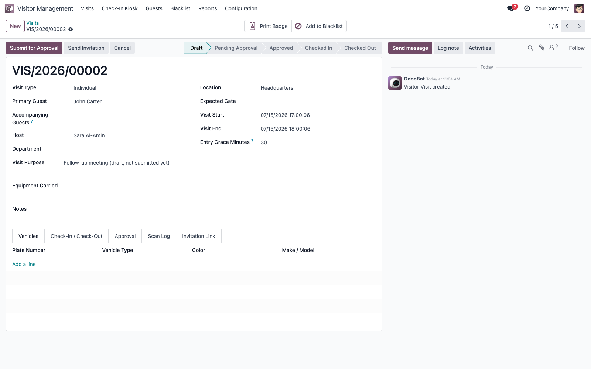
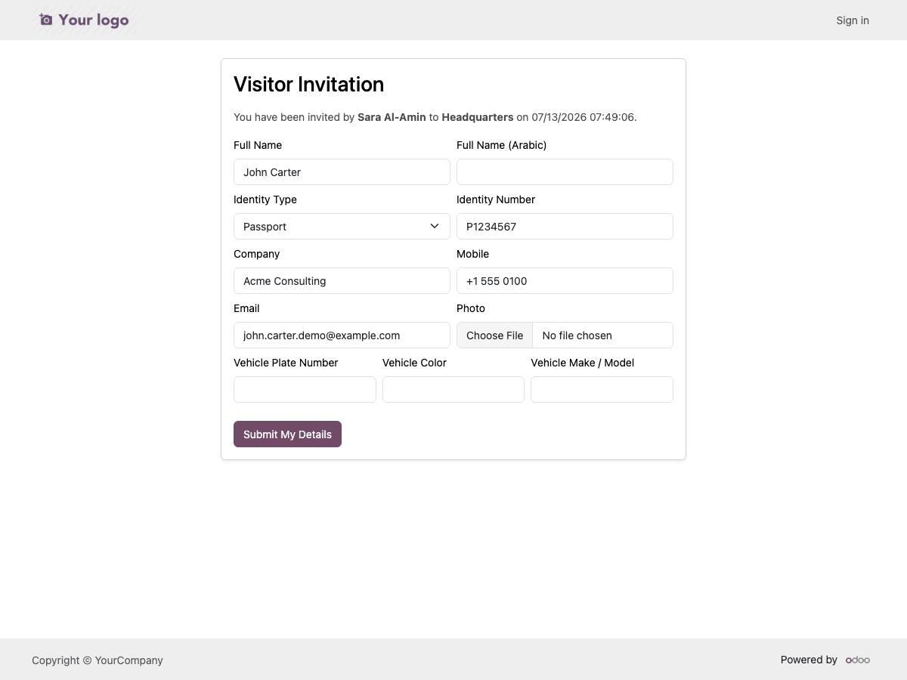
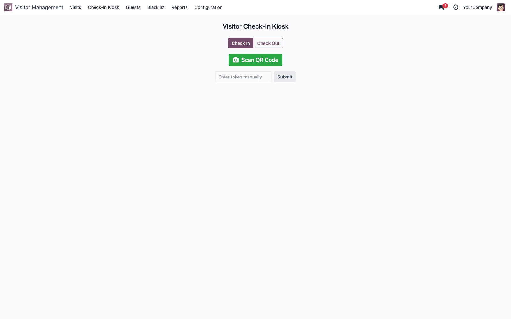
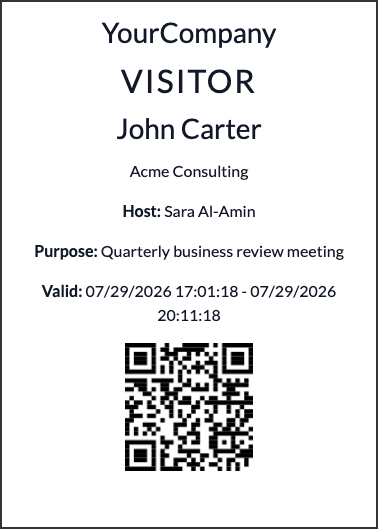
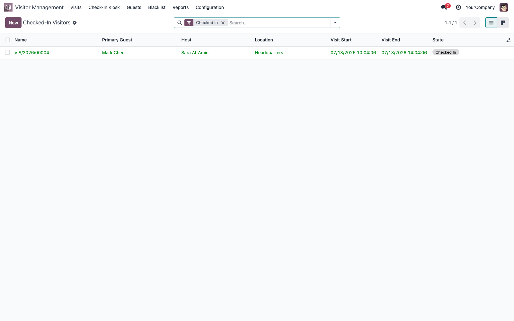
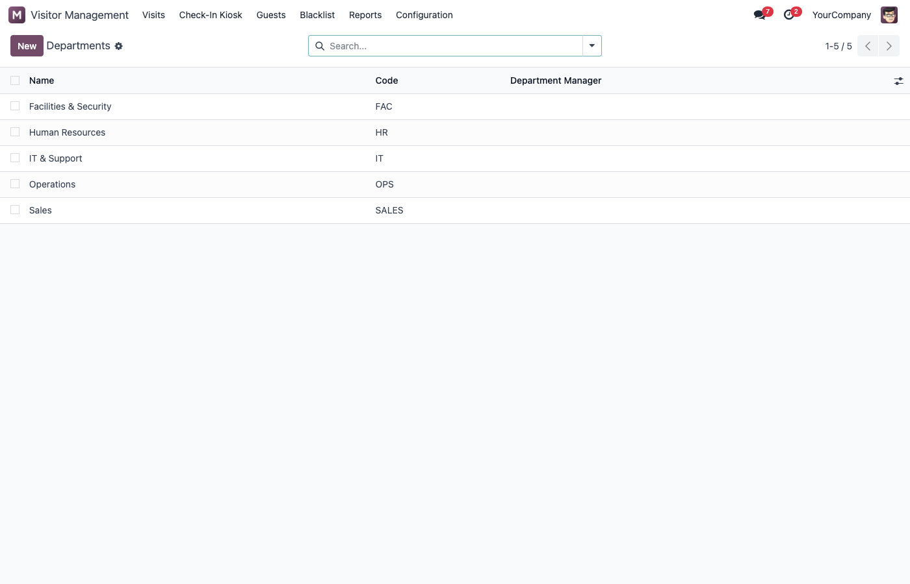
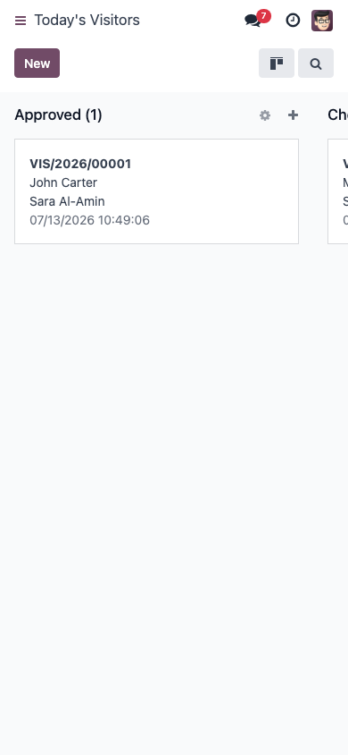

Secure QR Check-In • Approvals • Badges • Live Occupancy
Odoo 18€30Community & Enterprise
Manage visitor invitations, approvals, secure QR-based check-in and check-out,
printed visitor badges, vehicle permits, a blacklist and a live occupancy view
— entirely inside Odoo.
Screenshots

Today's visitors dashboard

Visit invitation form

Public, token-protected guest self-registration

Security check-in kiosk (camera QR scan)

Printable visitor badge with QR code

Currently checked-in visitors

Department master data

Responsive mobile view
Features
Invitations & approvals
Draft → Pending Approval → Approved/Scheduled → Checked In → Checked Out
Reject with reason, cancel, mark no-show, reset to draft
Optional auto-approval per company
Public self-registration link for the guest
Secure check-in
Random, single-purpose QR token (never the record id)
Allowed entry window with configurable grace period
Automatic expiry and revocation
Camera-based kiosk scanner + manual token entry
On-site operations
Vehicle permits per visit
Printable visitor badges with QR
Blacklist screening on every check-in
Immutable checkpoint scan audit log
Administration
Multiple locations and gates
Department master data, linked to hosts and visits
Multi-company support
Dedicated security groups per role
English and Arabic, RTL-ready
Security
QR check-in tokens are generated with Python's secrets module (cryptographically random), scoped to a single visit, time-windowed and revoked on rejection/cancellation/checkout.
The public guest registration page is looked up strictly by its own random token - never by database id - so it cannot be used to enumerate or view any other visit.
A Host Employee can only see and submit their own visits (enforced by record rules), and cannot approve their own or anyone else's visit - only a Visitor Manager can.
A Security Officer has no direct write access to visit records; check-in/check-out is performed through a narrowly-scoped server method with its own validation, not a general write permission.
The checkpoint scan log is immutable - it cannot be edited or deleted through the UI, by any role.
All company-scoped models are protected by multi-company record rules.
Supported editions
Works fully on Odoo 18 Community. No Enterprise-only feature is required.
Installation
Copy the module into your addons path and restart Odoo.
Go to Apps, search "Smart Visitor Management", click Install.
Configuration
Create your locations under Configuration → Locations.
Add at least one gate per location under Configuration → Gates.
Create host records under Configuration → Hosts.
Review approval and grace-period defaults under Settings → Visitor Management.
Assign security groups to your users.
FAQ
Does this require Odoo Enterprise? No, it runs fully on Community.
Does it depend on any other paid app? No, it only depends on standard Odoo modules (base, mail, portal, web).
Can guests check in without an Odoo account? Yes - via the QR code shown at the gate, or the security desk can enter the token manually.
Can it prevent QR code sharing or GPS spoofing? The token is single-purpose, time-windowed and logged on every scan, which strongly discourages misuse, but no software can guarantee 100% prevention of a guest sharing their own code with someone else.
Changelog
18.0.1.0.3 - Visitor Badge now prints on its own compact card-sized layout instead of the company's default A4/Letter format, and skips the one-time company document-layout setup screen. Fixed the QR code/badge number overflowing the printed card. Added Department master data (Configuration → Departments), linked to Hosts and Visits.
18.0.1.0.2 - Added the MTO publisher icon and set web_icon on the app's root menu.
18.0.1.0.1 - Fixed the Vehicle Permit PDF report failing to render due to a QWeb restriction on <td> elements.